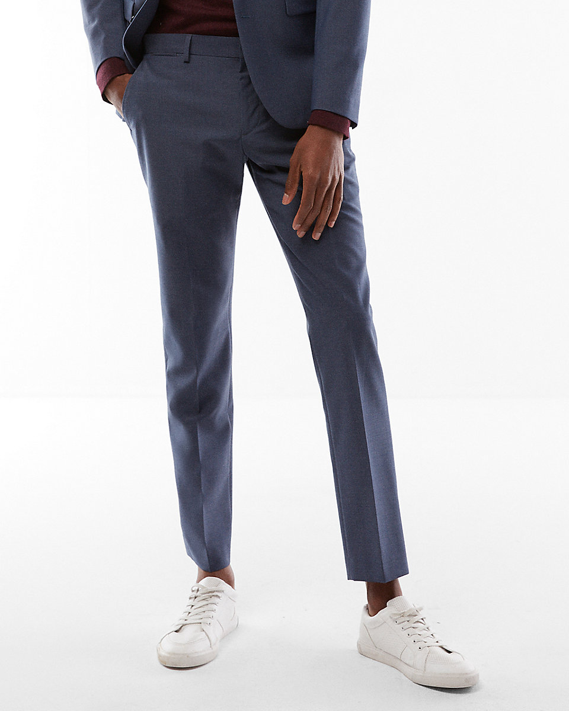

This is my go-to pant for any occasion. Whether you’re at a dinner party or just a night out, these pants belong in any guy’s wardrobe. Unless you’re an above average height, any guy can agree that a 30” length is not short enough for that cropped fit. I have been rolling the cuffs of my pants for years because of this problem. It wasn’t until I found The Innovator that I realized there is a perfect pant out there for me.
Shop Now Nothing is worse than your shoes being covered by the break of your trouser. With an extra slim and tailored fit from the waist down these pants cut off right above the ankle, giving enough room to not bury your shoes in fabric. Make sure before buying them that the material is a cotton and polyester/spandex mix. I have come across a few of the Innovator pants that have wool in them. Other than not contributing to the skinning of animals, the cotton Innovator pants form very well to you after being washed, which is always a plus.